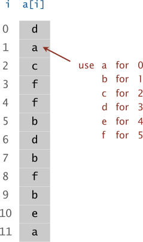
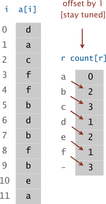
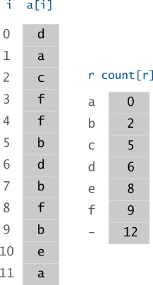
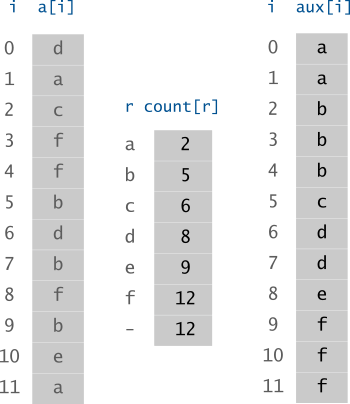

6 SORTING
Introduction
Sorting is a fundamental algorithm design problem. Many efficient algorithms use sorting as a subroutine, because it is often easier to process data if the elements are in a sorted order.
The basic problem in sorting is as follows: Given an array that contains n elements (keys), our task is to sort the elements in increasing order. For example, the array
will be as follows after sorting:
An inversion is a pair of keys that are out of order in the array
For instance, an array
{E, X, A, M, P, L, E}has 11 inversions:E-A, X-A, X-M, X-P, X-L, X-E, M-L, M-E, P-L, P-E, andL-E.
If the number of inversions in an array is less than a constant multiple of the array size, we say that the array is partially sorted.
A sorting method is stable if it preserves the relative order of equal keys in the array
An adaptive sorting algorithm is a type of sorting algorithm that takes advantage of existing order or structure in the input data to improve its performance.
A non-adaptive sorting algorithm is a type of sorting algorithm that does not take advantage of any existing order or structure in the input data.
6.1 Selection Sort
Selection Sort
Idea Assume that the array \boldsymbol{a} is composed of two parts: the left part \boldsymbol{s} is sorted and the right part \boldsymbol{u} is unsorted
\boldsymbol{s}=\emptyset and \boldsymbol{u}=\boldsymbol{a}
Find the smallest element x of the part \boldsymbol{u}
Remove x from \boldsymbol{u}
Append x to \boldsymbol{s}
Repeat the actions 2-4 until \boldsymbol{u} is empty
Implementation
template <class Item>
void selection(Item a[], int l, int r) {
for (int i = l; i < r; i++) {
int min = i;
for (int j = i + 1; j <= r; j++)
if (a[j] < a[min]) min = j;
swap(a[i], a[min]);
}
}Analysis
Selection sort uses \sim N^{2}/2 compares and N exchanges to sort an array of length N.
Analysis of selection sort for the input size of N (the number of keys)
Time complexity:
best case ? average case ? worst case ? Space complexity: ?
Stability: ?
6.2 Insertion Sort
Insertion Sort
Idea Assume that the array \boldsymbol{a} is composed of two parts: the left part \boldsymbol{s} is sorted and the right part \boldsymbol{u} is unsorted
\boldsymbol{s}=\emptyset and \boldsymbol{u}=\boldsymbol{a}
Remove the first elements x of \boldsymbol{u}
Insert x into its proper place among \boldsymbol{s}
Repeat the actions 2-3 until \boldsymbol{u} is empty
Implementation
- Algorithm 1
template <class Item>
void insertionsort(Item a[], int l, int r) {
for (int i = l + 1; i <= r; i++) {
Item v = a[i];
int j = i;
for (; j > l && v < a[j - 1]; j--)
a[j] = a[j - 1];
a[j] = v;
}
}- Algorithm 2 (using sentinel technique)
template <class Item>
void insertionsort(Item a[], int l, int r) {
int i;
for (i = r; i > l; i--) compare_swap(a[i - 1], a[i]);
for (i = l + 2; i <= r; i++) {
Item v = a[i];
int j = i;
for (; v < a[j - 1]; j--)
a[j] = a[j - 1];
a[j] = v;
}
}Analysis
The number of exchanges used by insertion sort is equal to the number of inversions in the array, and the number of compares is at least equal to the number of inversions and at most equal to the number of inversions plus the array size minus 1.
Insertion sort uses \sim N^{2}/4 compares and \sim N^{2}/4 exchanges to sort a randomly ordered array of length N with distinct keys, on the average.
Time complexity:
best case ? average case ? worst case ? Space complexity: ?
Stability: ?
6.3 Bubble Sort
Bubble Sort
- Keep passing through the array, exchanging adjacent elements that are out of order, continuing until the array is sorted.
- Bubble Sort is a kind of Selection Sort.
Implementation
template <class Item>
void bubblesort(Item a[], int l, int r) {
for (int i = l; i < r; i++)
for (int j = r; j > i; j--)
compare_swap(a[j - 1], a[j]);
}- Challenge: reimplement the function
bubblesortusing recursion technique
Analysis
Time complexity:
best case ? average case ? worst case ? Space complexity: ?
Stability: ?
6.4 Shell Sort
Shell Sort
Insertion sort is slow because the only exchanges it does involve adjacent items, so items can move through the array only one place at a time.
Shellsort is a simple extension of insertion sort that gains speed by allowing exchanges of elements that are far apart.
The running time is better than O(n^{2})
Idea
Given the decrement sequence \{h_{1},h_{2},...,h_{t}\} where h_{i}\in\mathbb{N} and h_{t}=1
For each h\in\{h_{1},h_{2},...,h_{t}\}
Split an array \boldsymbol{a} into h subsequences \begin{array}{l} a_{0},a_{0+h},a_{0+2h},...\\ a_{1},a_{1+h},a_{1+2h},...\\ a_{2},a_{2+h},a_{2+2h},...\\ ... \end{array}
Using Insertion Sort to sort each subsequence
Increment/Decrement Sequence
Shell proposed \begin{aligned} h_{1} & =\frac{N}{2}\nonumber \\ h_{i+1} & =\frac{h_{i}}{2}\quad i>1 \end{aligned}
Hibbard proposed h_{i}=2^{i}-1
Knuth proposed \begin{aligned} h_{1} & =1\nonumber \\ h_{i+1} & =3h_{i}+1\quad i>1 \end{aligned}
Pratt proposed \begin{aligned} \text{Successive numbers of the form } & 2^{p}3^{q},\quad p,q\in\mathbb{N} \end{aligned}
Implementation
template <class Item>
void shellsort(Item a[], int l, int r) {
int h;
for (h = 1; h <= (r - l) / 9; h = 3 * h + 1);
for (; h > 0; h /= 3)
for (int i = l + h; i <= r; i++) {
int j = i;
Item v = a[i];
while (j >= l + h && v < a[j - h]) {
a[j] = a[j - h];
j -= h;
}
a[j] = v;
}
}Analysis
The result of h-sorting an array that is k-ordered is an array that is both h- and k-ordered
Shellsort does less than N(h-1)(k-1)/g comparisons to g-sort an array that is h- and k-ordered, provided that h and k are relatively prime
Time complexity:
best case ? average case ? worst case ? Space complexity: ?
Stability: ?
6.5 Heap Sort
Heap Sort
Max heap: A tree is heap-ordered if the key in each node is larger than or equal to the keys in all of that node’s children (if any)
Min heap: A tree is heap-ordered if the key in each node is smaller than or equal to the keys in all of that node’s children (if any)
Max heap: No node in a heap-ordered tree has a key larger than the key at the root
Min heap: No node in a heap-ordered tree has a key smaller than the key at the root
Heap Representation
Array representation of a heap-ordered complete binary tree
Array \{a_{0},a_{1},a_{2},a_{3},a_{4},a_{5},a_{6},a_{7},a_{8}\} and complete binary tree
- Root node is a_{0}
Parent(a_{i})is a_{\left\lfloor \frac{i-1}{2}\right\rfloor } or nothingLeftChild(a_{i})is a_{2i+1} or nothingRightChild(a_{i})is a_{2i+2} or nothing
Top-down heapify
At the given node a_{i}
Exchange the key in the given node a_{i} with the largest key among that node’s children a_{2i+1} and a_{2i+2}
Move down to that child, and continuing down the tree until we reach the bottom or a point where no child has a larger key.
Implementation
template <class Item>
void heapify(Item a[], int n, int i) {
Item v = a[i];
while (i < n / 2) {
int child = 2 * i + 1;
if (child < n - 1)
if (a[child] > a[child + 1])
child++;
if (v >= a[child]) break;
a[i] = a[child];
i = child;
}
a[i] = v;
}Heap Sort
Build max-heap array: use
heapifyoperation to convert an array \boldsymbol{a} to a max-heap arrayAll elements in the range \left\{ a_{\frac{n}{2}},...,a_{n-1}\right\} are leaf nodes.
Apply
heapifyoperation for these elements \left\{ a_{\frac{n}{2}-1},...,a_{0}\right\}
Sort a max-heap array \boldsymbol{a}
Swap the first and the last element
Remove the last element
If |\boldsymbol{a}|>1 then apply
heapifyoperation for a_{0} and repeat actions 1-2
template <class Item>
void heapsort(Item a[], int l, int r) {
Item *pa = a + l;
int N = r - l + 1;
for (int k = N / 2 - 1; k >= 0; k--)
heapify(pa, N, k);
while (N > 1) {
swap(pa[0], pa[N - 1]);
N--;
heapify(pa, N, 0);
}
}Analysis
Heapsort uses fewer than 2N\log_{2}N comparisons to sort N elements
Time complexity:
best case ? average case ? worst case ? Space complexity: ?
Stability: ?
6.6 Merge Sort
Top-Down Merge Sort
Idea Merge sort sorts a subarray a[l\ldots r] as follows:
If l\geq r, do not do anything, because the subarray is already sorted or empty.
Calculate the position of the middle element: m=\lfloor(l+r)/2\rfloor.
Recursively sort the subarray
a[l\ldots m].Recursively sort the subarray
a[m+1\ldots r].Merge the sorted subarrays
a[l\ldots m] anda[m+1\ldots r] into a sorted subarraya[l\ldots r].
Sorting the following array:

The array will be divided into two subarrays as follows:
Then, the subarrays will be sorted recursively as follows:
Finally, the algorithm merges the sorted subarrays and creates the final sorted array:

Implementation
template <class Item>
void mergesort(Item a[], Item aux[], int l, int r) {
if (r <= l) return;
int m = (l + r) / 2;
mergesort(a, aux, l, m);
mergesort(a, aux, m + 1, r);
merge(a, aux, l, m, r);
}template <class Item>
void merge(Item a[], Item aux[], int l, int m, int r) {
int i, j, k;
for (k = l; k <= r; k++)
aux[k] = a[k];
i = l; j = m + 1; k = l;
while (i <= m && j <= r)
if (aux[i] <= aux[j]) a[k++] = aux[i++];
else a[k++] = aux[j++];
while (i <= m)
a[k++] = aux[i++];
while (j <= r)
a[k++] = aux[j++];
}Bottom-up Merge Sort
Idea Bottom-up merge sort consists of
A sequence of passes over the whole array doing
sz-by-szmergesDoubling
szon each pass.The final subarray is of size
szonly if the array size is an even multiple ofsz, so the final merge is ansz-by-xmerge, for somexless than or equal tosz.
Implementation
template <class Item>
void mergesort(Item a[], Item aux[], int l, int r) {
for (int sz = 1; sz <= r - l; sz = sz + sz)
for (int i = l; i <= r - sz; i += sz + sz)
merge(a, aux, i, i + sz - 1, min(i + sz + sz - 1, r));
}Analysis
Mergesort requires about N\log_{2}N comparisons to sort any array of N elements
Time complexity:
best case ? average case ? worst case ? Space complexity: ?
Stability: ?
6.7 Quick Sort
Quick Sort
Idea Quicksort invented by C. A. R. Hoare in 1960 is a divide-and-conquer method for sorting
Select a pivot element v
Partition an array \boldsymbol{a} into two parts \boldsymbol{a}_{left} and \boldsymbol{a}_{right} such that \forall x\in\boldsymbol{a}_{left} and \forall y\in\boldsymbol{a}_{right} then x\leq v \leq y
Sort the parts \boldsymbol{a}_{left} and \boldsymbol{a}_{right} independently
Join \boldsymbol{a}_{left} and \boldsymbol{a}_{right} to \boldsymbol{a}=\boldsymbol{a}_{left}\,v\,\boldsymbol{a}_{right}
Implementation
template <class Item>
void quicksort(Item a[], int l, int r) {
if (r <= l) return;
int i = partition(a, l, r);
quicksort(a, l, i - 1);
quicksort(a, i + 1, r);
}template <class Item>
int partition(Item a[], int l, int r) {
int i = l - 1, j = r; Item v = a[r];
for (;;) {
while (a[++i] < v);
while (v < a[--j]) if (j == l) break;
if (i >= j) break;
swap(a[i], a[j]);
}
swap(a[i], a[r]);
return i;
}Analysis
Quicksort uses \sim2N\log_{2}N compares (and one-sixth that many exchanges) on the average to sort an array of length N with distinct keys.
Quicksort uses \sim N^{2}/2 compares in the worst case
Time complexity:
best case ? average case ? worst case ? Space complexity: O(1)?
Stability: No
A lower bound for the worst case
No compare-based sorting algorithm can guarantee to sort N items with fewer than \log_{2}(N!)\sim N\log_{2}N compares.
Comparing Sorting Algorithms
- Performance characteristics of sorting algorithms
| algorithm | stable? | in-place? | running time | space |
|---|---|---|---|---|
| selection | no | yes | N^{2} | 1 |
| insertion | yes | yes | between N and N^{2} | 1 |
| shell | no | yes | N\log N?, N^{6/5}? | 1 |
| merge | yes | no | N\log N | N |
| quick | no | yes | N\log N | \log N |
| 3-way quick | no | yes | between N and N\log N | \log N |
| heap | no | yes | N\log N | 1 |
6.8 Key-indexed Counting
Assumptions about keys
- Assumption.
-
Keys are integers or can be mapped to integers between 0 and R-1.
- Implication.
-
Can use key as an array index.
Key-indexed Counting
Problem.
Sort an array a of N items whose keys are integers between 0 and R-1.
// Compute frequency counts.
for (int i = 0; i < N; i++)
count[a[i].key() + 1]++;
// Transform counts to indices.
for (int r = 0; r < R; r++)
count[r + 1] += count[r];
// Distribute the items.
for (int i = 0; i < N; i++)
aux[count[a[i].key()]++] = a[i];
// Copy back.
for (int i = 0; i < N; i++)
a[i] = aux[i];Input an array a of 12 letters
Compute frequency counts
Transform counts to indices.
Distribute the data
Copy back
Analysis
Key-indexed counting uses 8N+3R+1 array accesses to stably sort N items whose keys are integers between 0 and R-1.
Time complexity:
best case ? average case ? worst case ? Space complexity: ?
Stability: ?
6.9 Radix Sort
Radix Sort
A byte is a fixed-length sequence of bits.
A word is a fixed-length sequence of bytes.
A string is a variable-length sequence of bytes.
Idea Radix-sorting algorithms treat the keys as numbers represented in a base-R number system, for various values of R (the radix), and work with individual digits of the numbers.
A key is a radix-R number, with digits numbered from the right (starting at 0)
- In programing, we use the abstract
digitoperation to access digits of keys
There are two basic approaches to radix sorting:
The first class of methods: They examine the digits in the keys in a left-to-right order, working with the most significant digits first. These methods are generally referred to as most-significant-digit (MSD) radix sorts or top-down methods.
The second class of methods: They examine the digits in the keys in a right-to-left order, working with the least significant digits first. These methods are generally referred to as least-significant-digit (LSD) radix sorts or bottom-up methods.
LSD Implementation
template <class Item>
void radixsort(Item a[], int l, int r) {
vector<Item> bins[radix];
for (int d = 0; d < max_digit; d++) {
// clear bins
...
// distribute
for (i = l; i <= r; i++)
bins[digit(a[i],d,radix)].push_back(a[i]);
// join bins to a[l...r]
...
}
}Example 1
Sort an array of integer numbers
{170, 45, 75, 90, 802, 2, 24, 66}Rewrite the numbers in 3-digit format
{170, 045, 075, 090, 802, 002, 024, 066}Distribute the data into 10 bins on digit d=0
{170, 045, 075, 090, 802, 002, 024, 066}bin 0: 170, 090bin 1:bin 2: 802, 002bin 3:bin 4: 024bin 5: 045, 075bin 6: 066bin 7:bin 8:bin 9:Join the bins
{170, 090, 802, 002, 024, 045, 075, 066}Distribute the data into 10 bins on digit d=1
{170, 090, 802, 002, 024, 045, 075, 066}bin 0: 802, 002bin 1:bin 2: 024bin 3:bin 4: 045bin 5:bin 6: 066bin 7: 170, 075bin 8:bin 9: 090Join the bins
{802, 002, 024, 045, 066, 170, 075, 090}Distribute the data into 10 bins on digit d=2
{802, 002, 024, 045, 066, 170, 075, 090}bin 0: 002, 024, 045, 066, 075, 090bin 1: 170bin 2:bin 3:bin 4:bin 5:bin 6:bin 7:bin 8: 802bin 9:Join the bins
{002, 024, 045, 066, 075, 090, 170, 802}
170 |
17 0 |
8 0 2 |
0 02 |
|||
045 |
09 0 |
0 0 2 |
0 24 |
|||
075 |
80 2 |
0 2 4 |
0 45 |
|||
090 |
\longrightarrow | 00 2 |
\longrightarrow | 0 4 5 |
\longrightarrow | 0 66 |
802 |
02 4 |
0 6 6 |
0 75 |
|||
002 |
04 5 |
1 7 0 |
0 90 |
|||
024 |
07 5 |
0 7 5 |
1 70 |
|||
066 |
06 6 |
0 9 0 |
8 02 |
Example 2
Sort 17 integer numbers
{6, 7, 1, 3, 5, 2, 0, 4, 2, 1, 7, 2, 1, 3, 5, 2, 7}Rewrite the numbers in 3-digit binary numbers
110, 111, 001, 011, 101, 010, 000, 100, 010, 001, 111, 010, 001, 011, 101, 010, 111
Analysis
Time complexity:
best case ? average case ? worst case ? Space complexity: ?
Stability: ?
6.10 Workshop
Quiz
What is a sorting operation?
What is an inversion?
How selection sort sorts the sample array
E A S Y Q U E S T I O N?